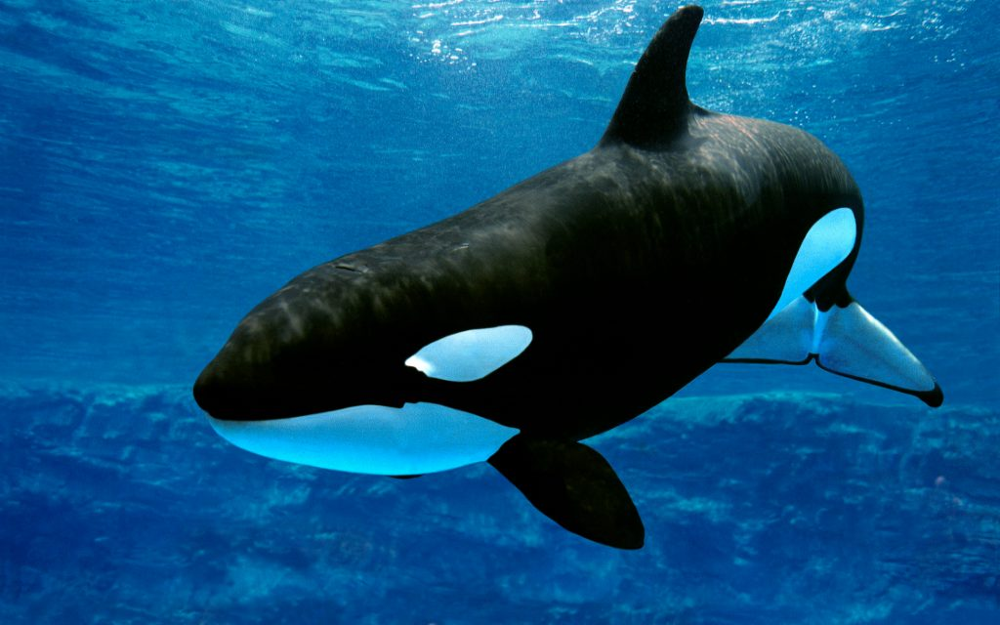

Las Orcas
Las orcas son uno de los mamíferos marinos más impresionantes y reconocibles del mundo. A pesar de su nombre, las orcas no son verdaderas ballenas, sino el miembro más grande de la familia de los delfines.

Características de las Orcas
- Las orcas tienen una apariencia distintiva, con un cuerpo negro y blanco, aletas dorsales altas y un patrón de manchas en la cabeza.
- Son depredadores extremadamente hábiles y se alimentan de una variedad de presas, incluyendo peces, calamares, focas y otros cetáceos.
- Las orcas son animales sociales y viven en grupos llamados "pods" que pueden consistir en varias docenas de individuos.
- Son conocidas por su inteligencia, comunicación vocal compleja y técnicas de caza cooperativa.
Hechos Interesantes
- Las orcas son conocidas como "ballenas asesinas" debido a su reputación de depredadores poderosos, pero rara vez representan una amenaza para los humanos en la naturaleza.
- Se cree que las diferentes poblaciones de orcas tienen dialectos de comunicación vocal únicos.
- Las orcas son capaces de saltar hasta 5 metros de altura fuera del agua.
Conservación
Las orcas enfrentan amenazas en la naturaleza, como la contaminación, la pérdida de hábitat y la interacción con actividades humanas. La conservación de estos majestuosos animales es fundamental para su supervivencia y para mantener la salud de los ecosistemas marinos.
Las orcas son criaturas fascinantes que inspiran admiración y respeto en todo el mundo. Su papel en los océanos es fundamental y merece nuestra protección y conservación.